Key Takeaways
- Determines whether Lock on Leave is forced on/off by the MDM policy.
- Windows automatically locks when the paired device moves out of range.
- Dynamic Lock will unavailable when disabled.
- The setting becomes non-configurable and the toggle in the Windows UI is greyed out.
Hey, let’s learn about how use Intune to Automatically Lock Windows Devices when users leave to protect sensitive data. This policy setting determines whether Lock on Leave is forced on/off by the MDM policy. The user won’t be able to change this setting and the toggle in the UI will be greyed out. This policy ensures devices lock themselves when the user steps away with their paired device. It reduces the risk of unauthorized access.
Table of Contents
What are the Advantages of this Policy?
This policy uses Dynamic lock to automatically lock a device when the paired device moves away. When managed by MDM The user won’t be able to change this setting and the toggle in the UI will be greyed out.
1. This policy reduces the chance of unauthorized access.
2. When admins decide whether the feature is on or off then users cannot override it.
3. Protects sensitive data in open offices, healthcare facilities, or financial institutions.
4. The toggle is greyed out, making it clear to users that the setting is enforced and not optional.
Use Intune to Automatically Lock Windows Devices When Users Leave to Protect Sensitive Data
The Force Instant Lock Policy determines whether Lock on Leave is forced on/off by the MDM policy. If the policy is enabled, dynamic Lock is always active. The device will lock automatically when the paired device leaves range. If it is disabled, dynamic lock will completely unavailable. In both cases, the user cannot change the setting, and the control is locked down by IT.
How to Create Force Instant Lock Policy
To create the policy, the first step you must do is to sign in to the Microsoft Intune Admin Center. Then click on the devices on the left side of the screen, select configuration then click on create and select new policy.
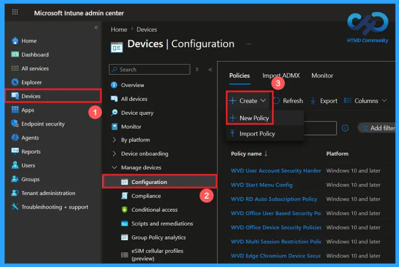
Create a Profile of Force Instant Lock Policy
You can create a profile to Force Instant Lock Policy by clicking new policy. Now select Windows 10 and later as the platform, then choose settings catalog as the profile type. Once these options are configured, click Create to continue.
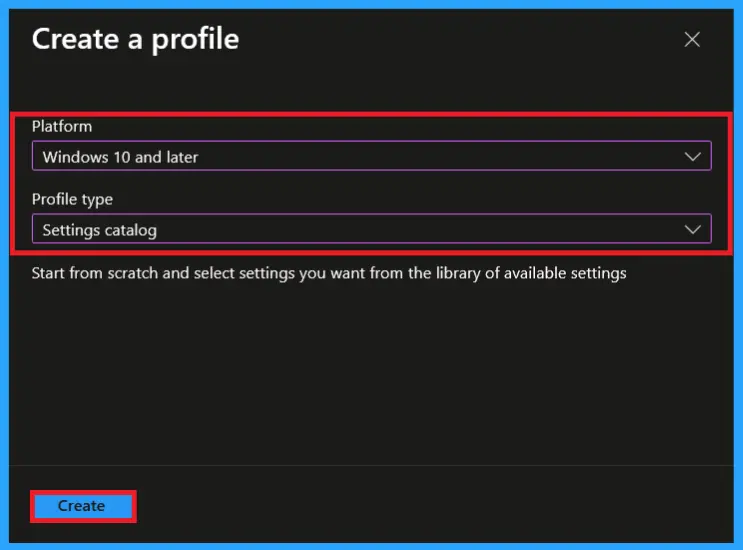
Basic Settings of Force Instant Lock Policy
In the basics tab, you can provide a name and description for this policy. so, you can identify later by using its name. Providing description is optional but name is important. Here, I gave the policy name as Force Instant Lock and description as determines the timeout for lock on leave forced by the MDM policy. Then click next to continue.
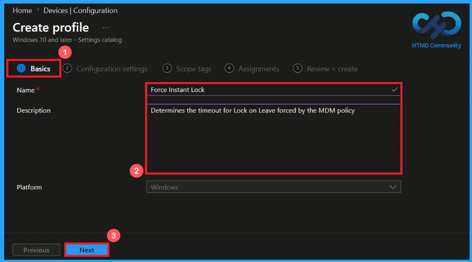
Configuration settings of Force Instant Lock Policy
In this configuration settings, you can easily add a policy by clicking on +Add settings. Then a Settings Picker will open on the right side of the screen. Here, I selected Human Presence category and selected the Force Instance Lock policy.
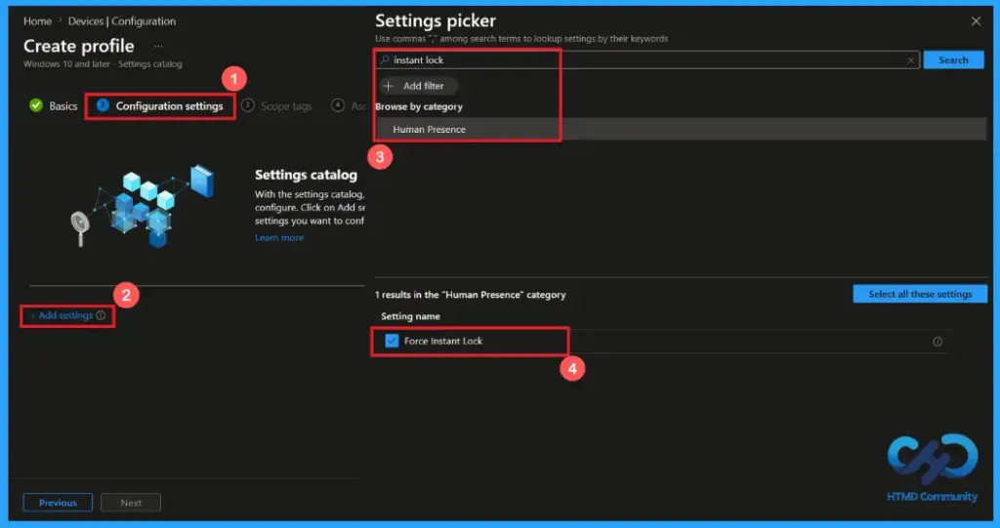
Default To User Choice
This policy settings allows default to user choice. Allows users to manage this setting themselves through Windows settings. This is a default behavior of this policy. It allows users to decide whether the windows should instantly lock the device when the user steps away with their paired device.
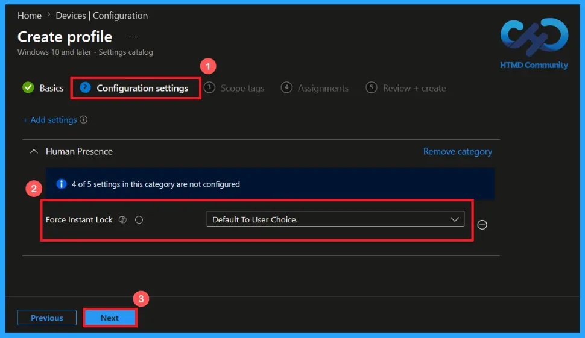
Forced Off or On Options
The Force Instant Lock policy controls whether the device should Lock immediately when the paired device leaves range. Click on the dropdown arrow and select forced off option to disable the instant lock feature or select forced on option for force the device to lock immediately when the user leaves. then click next button to continue.
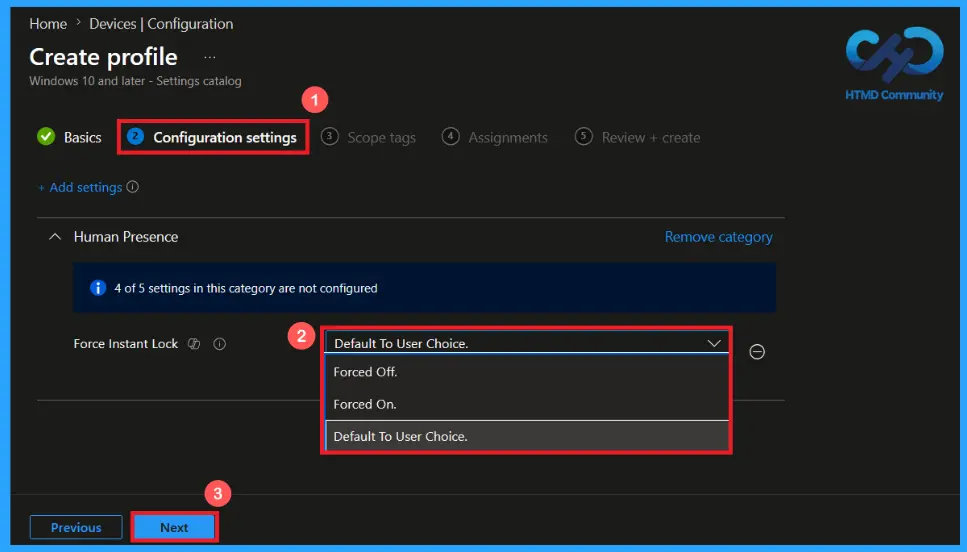
Scope Tag Settings for Force Instance Lock Policy
A scope tag in Intune helps to organize and manage Intune resources based on administrative roles. Adding a scope tag is not mandatory. If needed, select the appropriate scope tag by clicking the select scope tags button. Here I selected the London scope tag. Then Click Next to continue.
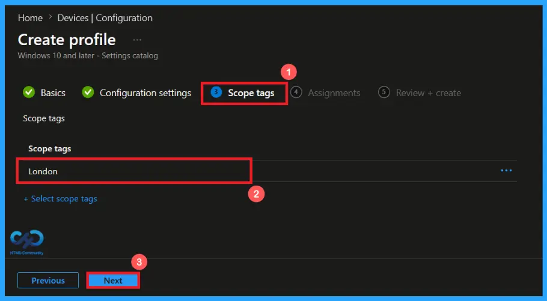
Add Groups using Assignment Tab
Use the assignment section to specify the users or devices that will receive the policy. Click Add Groups under included groups, then choose a group from the list. Here, I selected HTMD – Test Policy. Then click the Next button to continue.
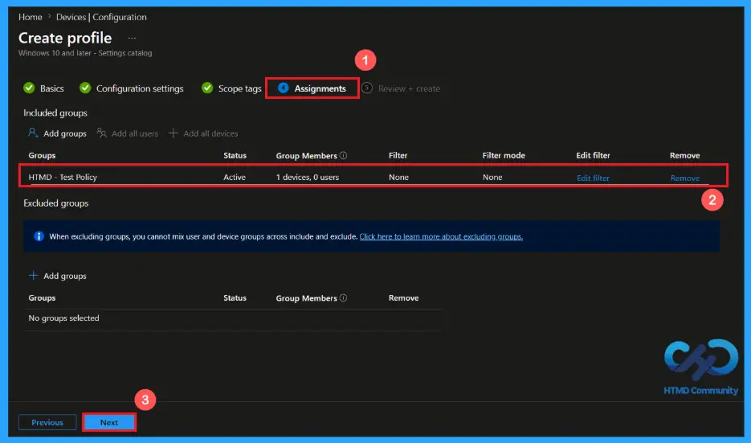
Verify and Create the Policy
In the Review + Create step. We can review all configured settings for the policy profile. Use the previous option for making any necessary changes, click on create to complete the process. Then a notification will pop up and confirms that your policy has been created successfully.
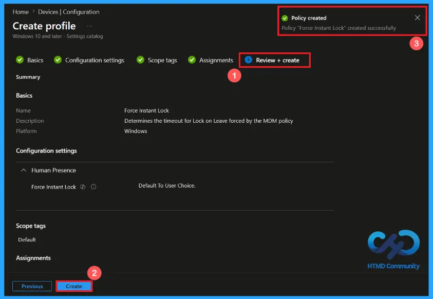
Device and User Check-in Status
After creating and assigning the policy. You can verify its deployment status from Intune admin center. Go to the Devices > Configuration in the Intune portal, select Force Instant Lock policy. Open the policy and review the Device and User Check-in Status to verify whether the status has shown succeeded (1), using manual sync option through company portal you can get it succeeded easily.
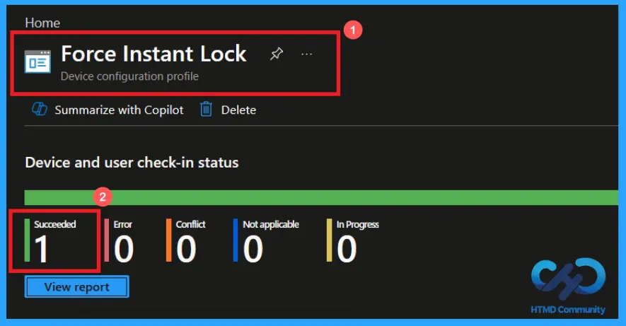
Client-side Verification of Force Instant Lock Policy
To confirm that the Force Instant Lock policy has been successfully applied on a client device. Open Event Viewer and navigate to Applications and Services Logs > Microsoft >Windows >Device Management Enterprise Diagnostic Provider > Admin. From the list of policies, use the Filter Current Log option and search for Intune event 813.
MDM PolicyManager: Set policy int, Policy: (ForcelnstantLock), Area: (HumanPresence),
EnrollmentID requesting merge: (EB427D85-802F-46D9-A3E2-D5B414587F63), Current User:
(Device), Int: (0x0), Enrollment Type: (0x6), Scope: (0x0).
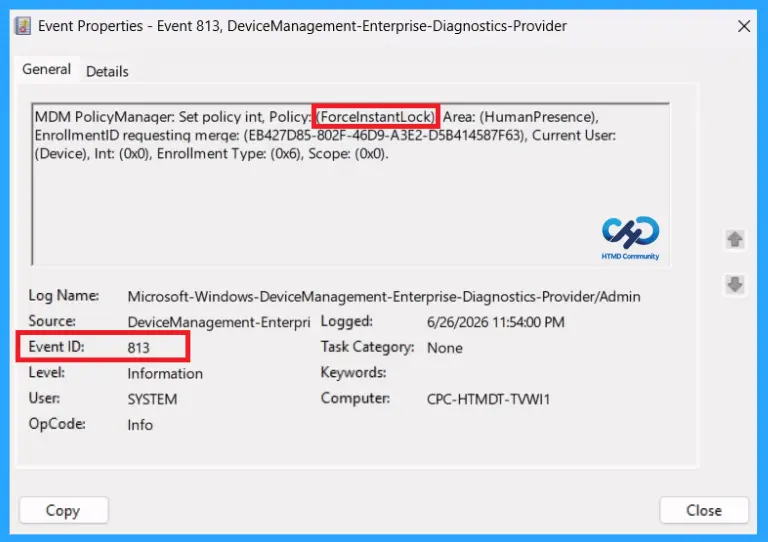
Configuration Service Provider (CSP)
The Configuration Service Provider (CSP) defines how windows configuration settings are managed through Microsoft Intune. Ensuring consistent policy deployment across Windows 10 and 11 devices. It explains what each policy does, what settings or values can be used, and how it connects to older Group Policy settings (Group Policy Mapping details).
Description framework properties: The following table shows the description framework properties of Force Instant Lock policy.
| Property name | Property value |
|---|---|
| Format | int |
| Access Type | Add, Delete, Get, Replace |
| Default Value | 0 |
Allowed values: It defines the supported configuration options available for the Force Instant Lock policy
- 2 – Forced Off
- 1 – Forced On
- 0(default) – Default to User Choice.
Group policy mapping: It shows the equivalent Group Policy Settings for an Intune policy.
| Name | Value |
|---|---|
| Name | ForceInstantLock |
| Friendly Name | Force Instant Lock |
| Location | Computer Configuration |
| Path | Windows Components > Human Presence |
| Registry Key Name | Software\Policies\Microsoft\HumanPresence |
| Registry Value Name | ForceInstantLock |
| ADMX File Name | Sensors.admx |
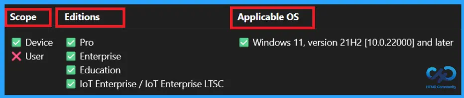
How to Remove the Assigned Group from Force Instant Lock Policy
To remove an assigned group from a policy, Open the Force Instant Lock policy from the Configuration tab and click on the Edit button on the Assignment tab. Click on Remove button on this section to remove the policy and click Review + Save after making the change.
etailed information, you can refer to our previous post – Learn How to Delete or Remove App Assignment from Intune using by Step-by-Step Guide.
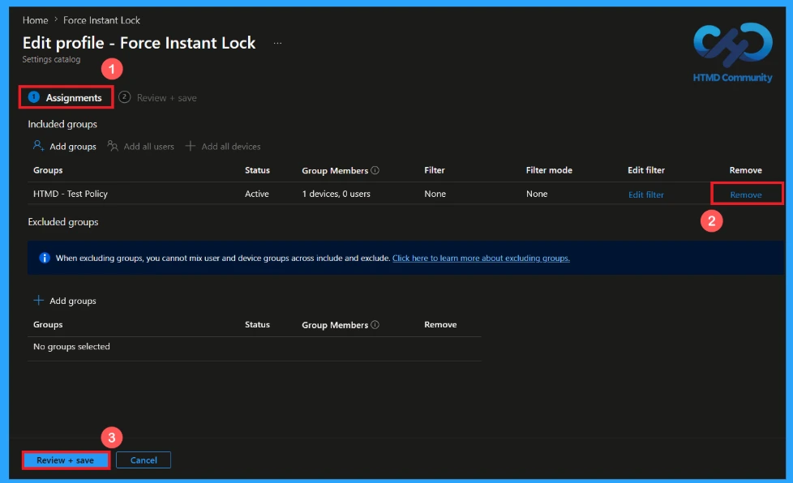
How to Delete the Force Instant Lock Policy from Intune Portal
If you want to delete this policy for any reason. First, search for the Force Instant Lock policy in the configuration section. When you find the policy name, click on the 3-dot menu next to it and tap the Delete option.
etailed information, you can refer to our previous post – Learn How to Delete or Remove App Assignment from Intune using by Step-by-Step Guide.
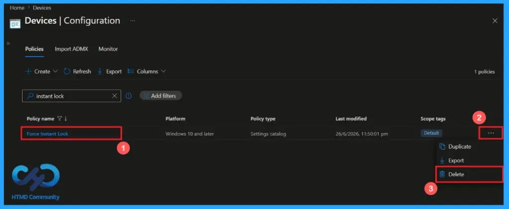
Need Further Assistance or Have Technical Questions?
Join the LinkedIn Page and Telegram group to get the latest step-by-step guides and news updates. Join our Meetup Page to participate in User group meetings. Also, Join the WhatsApp Community and WhatsApp Channel to get the latest news on Microsoft Technologies. We are there on Reddit as well.
Author
Anoop C Nair has been Microsoft MVP from 2015 onwards for 10 consecutive years! He is a Workplace Solution Architect with more than 22+ years of experience in Workplace technologies. He is also a Blogger, Speaker, and Local User Group Community leader. His primary focus is on Device Management technologies like SCCM and Intune. He writes about technologies like Intune, SCCM, Windows, Cloud PC, Windows, Entra, Microsoft Security, Career, etc.